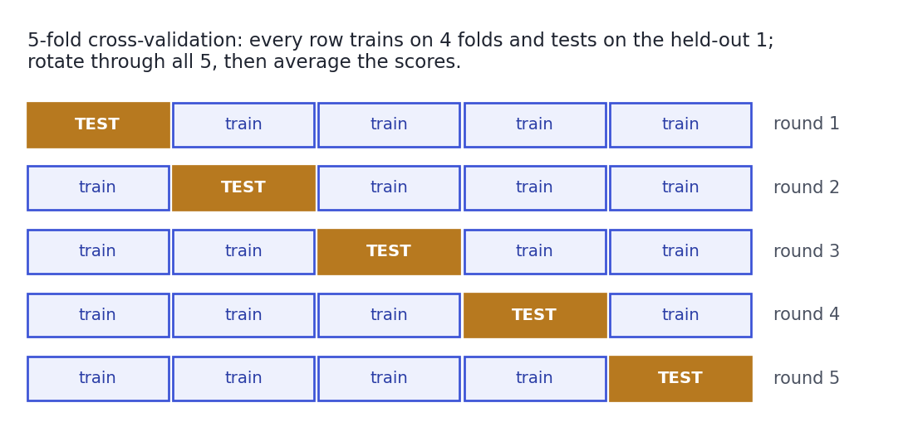

Model Selection & Cross-Validation
Choosing a model without fooling yourself.
You now know several models — but at work the question is always "which one, with which settings, and how well will it really do?" Answer that wrong and you'll ship a model that looked great in your notebook and falls apart in production. This lesson is the discipline that prevents that: cross-validation for an honest performance estimate, a clean way to tune without cheating, and the single most dangerous mistake in all of applied machine learning — data leakage. This is the craft that separates people who run models from people who can be trusted with them.
ConceptWhy one split isn't enough
Back in Lesson 8.1 you held out a test set. But a single train/test split has two problems: it wastes data (the test rows never help training), and it's a coin-flip — a lucky or unlucky split can make a model look better or worse than it is, so you can't trust a small difference between two models. You want a performance estimate that uses all the data and doesn't hinge on one arbitrary split. That's what cross-validation gives you.
Concept · the workhorsek-fold cross-validation
k-fold cross-validation splits the data into k equal folds (5 is standard). Then it trains k times: each round holds out one fold as the test set and trains on the other k-1, rotating so every fold gets its turn as the test set exactly once. You average the k scores for a stable estimate — and their spread tells you how much that estimate wobbles:

Concept · the validation trapTuning without cheating
Here's the trap that catches everyone once. You try 50 settings, keep whichever scores best on your test set, and report that score. But by selecting on the test set, you've fit to its noise — the number is now optimistic and won't hold. The rule: the test set is opened once, at the very end, and never used to make a choice. All model comparison and hyperparameter tuning happens with cross-validation on the training data (tools like GridSearchCV automate trying combinations, each scored by CV). Only after everything is locked do you touch the test set for a single final estimate.
Concept · the one that bitesData leakage: the silent killer
Data leakage is when information from outside the training data sneaks into training, inflating your scores in a way that vanishes in production. The classic: you standardise or impute using statistics from the whole dataset before splitting — so the training folds have peeked at the test fold's mean. The fix is ironclad: fit every preprocessing step on the training fold only, inside the cross-validation loop — which is exactly what a scikit-learn Pipeline enforces. Other leaks: a feature that's a proxy for the target (a "days until churn" column when predicting churn), or shuffling time-series data so the future trains on... itself.
Worked exampleCross-validate in scikit-learn
One function does the whole rotate-and-average dance. The individual fold scores and their spread are as informative as the mean:
from sklearn.datasets import make_classification
from sklearn.ensemble import RandomForestClassifier
from sklearn.model_selection import cross_val_score
X, y = make_classification(n_samples=500, n_features=8, n_informative=5, random_state=2)
scores = cross_val_score(RandomForestClassifier(n_estimators=100, random_state=0), X, y, cv=5)
print("score per fold:", [f"{s:.3f}" for s in scores])
print(f"mean accuracy : {scores.mean():.3f}")
print(f"std (wobble) : {scores.std():.3f}")score per fold: ['0.930', '0.950', '0.970', '0.930', '0.950'] mean accuracy : 0.946 std (wobble) : 0.015
Five folds, five scores, one honest average — and the standard deviation tells you how much to trust it. If two models' CV means differ by less than this wobble, the difference probably isn't real. This mean, not any single split, is the number you compare models by.
Interactive labYour turn — cross-validate a model
X, y, cross_val_score, and RandomForestClassifier are loaded. Run 5-fold cross-validation on a 100-tree random forest and assign to answer the mean accuracy across the folds, rounded to 2 decimals.
X, y loaded; cross_val_score + RandomForestClassifier imported. First Run loads scikit-learn.cross_val_score(RandomForestClassifier(n_estimators=100, random_state=0), X, y, cv=5) returns 5 scores; take .mean() and round(float(...), 2).scores = cross_val_score(RandomForestClassifier(n_estimators=100, random_state=0), X, y, cv=5)
answer = round(float(scores.mean()), 2)The mean of the fold scores is a far more trustworthy estimate than any single split, and it's the number you'd use to compare against another model.
★ Key points to remember
- A single train/test split wastes data and is a coin-flip; cross-validation gives a stable estimate using all the data.
- k-fold CV: split into
kfolds, trainktimes each holding out a different fold, then average the scores (and note their spread). - Tune and compare with CV on the training data; open the test set once, at the very end. Selecting on the test set inflates your estimate.
- Data leakage — letting test information into training (e.g., scaling before splitting) — inflates scores that then collapse in production. Fit preprocessing inside CV via a Pipeline.
- Compare models by their CV mean; a gap smaller than the CV spread probably isn't real.
◆ Practice▸
Show solution & reasoning
The gap (0.006) is much smaller than the fold-to-fold wobble (~0.02), so the difference is almost certainly noise, not a real edge — treat A and B as tied on accuracy. I'd choose on other grounds: simplicity/interpretability, training and inference speed, robustness, and maintenance cost. Chasing a 0.6% CV difference that's inside the noise is how you overfit your model selection.
days_late column. Your model scores 0.99. What would you check first?Show solution & reasoning
That score screams leakage. days_late is essentially a consequence of defaulting (you only rack up late days if you're defaulting), so it's a proxy for the target that wouldn't be available at prediction time (when you decide to grant the loan). I'd remove any feature that couldn't exist at the moment of prediction, re-evaluate, and audit the rest for target proxies. A 0.99 on a hard real-world problem is a red flag, not a trophy.
◎ Deep dive: stratified/group/time-series CV, nested CV, and leak-proof Pipelines▸
Match the fold to the data. Plain k-fold shuffles rows, which is wrong for some data. Stratified k-fold keeps each fold's class balance equal to the whole (essential for imbalanced classification). Group k-fold keeps all rows from the same entity (a patient, a user) in the same fold, so the model can't memorise an individual and get tested on them. Time-series split always trains on the past and tests on the future, never shuffling time — because in production you only ever have the past. Using ordinary k-fold on grouped or temporal data is a subtle, common leak.
Tuning, and the trap inside the trap. You search hyperparameters (GridSearchCV tries a grid, RandomizedSearchCV samples it), each candidate scored by CV. But if you then report that best CV score as your performance, you've selected on it — the same optimism, one level up. The clean answer is nested cross-validation: an inner CV picks the settings, an outer CV estimates performance, so selection and evaluation never touch the same data. For most work, the simpler discipline — CV to tune, a locked-away test set opened once — is enough.
Pipelines aren't optional hygiene — they're the leak-proofing. A scikit-learn Pipeline chains preprocessing (scaling, imputing, encoding) with the model into one object. When that pipeline is passed to cross_val_score, every step is re-fit on each training fold alone, so no test information ever leaks through preprocessing. Building a Pipeline from day one is the habit that makes leakage structurally impossible — a large part of why senior practitioners insist on it.
The trio interviewers want: cross-validation (rotate k folds, average — a stable estimate using all data); never tune or select on the test set (CV on training to tune, test opened once at the end); and data leakage (test info reaching training — e.g., scaling before splitting — fixed by fitting preprocessing inside a Pipeline within CV). Add time-series split for temporal data and you'll sound seasoned.